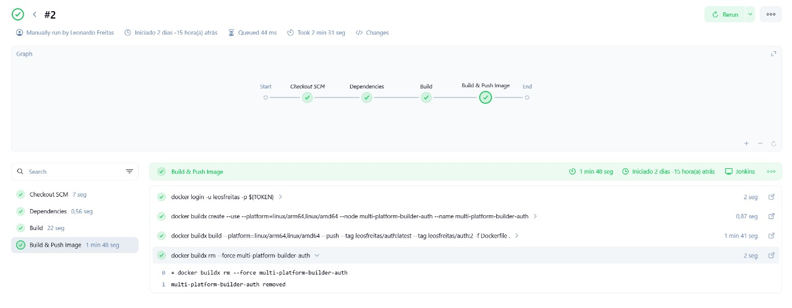

Jenkins – CI/CD da Plataforma
Este documento descreve a configuração da pipeline Jenkins para build, push e deploy dos microsserviços da plataforma.
Também detalha o endpoint/infodo Gateway, usado para debug e verificação de ambiente em tempo de execução.
Pipeline Jenkins
Jenkinsfile (exemplo do account-service)
pipeline {
agent any
environment {
SERVICE = 'account'
NAME = "humbertosandmann/${env.SERVICE}"
}
stages {
stage('Dependências') {
steps {
build job: 'account', wait: true
}
}
stage('Build') {
steps {
sh 'mvn -B -DskipTests clean package'
}
}
stage('Build & Push Image') {
steps {
withCredentials([usernamePassword(
credentialsId: 'dockerhub-credential',
usernameVariable: 'USERNAME',
passwordVariable: 'TOKEN')])
{
sh "docker login -u $USERNAME -p $TOKEN"
sh "docker buildx create --use --platform=linux/arm64,linux/amd64 --node multi-platform-builder-${env.SERVICE} --name multi-platform-builder-${env.SERVICE}"
sh "docker buildx build --platform=linux/arm64,linux/amd64 --push --tag ${env.NAME}:latest --tag ${env.NAME}:${env.BUILD_ID} -f Dockerfile ."
sh "docker buildx rm --force multi-platform-builder-${env.SERVICE}"
}
}
}
}
}
Credenciais & Ambiente
| Chave | Tipo | Onde usar |
|---|---|---|
dockerhub-credential |
usernamePassword |
Usado no stage de push da imagem |
.env |
Arquivo com variáveis | Utilizado para definir secrets e configs nos microsserviços |
Serviços com Jenkinsfile
Todos os microsserviços a seguir possuem um Jenkinsfile próprio:
account-serviceauth-servicegateway-serviceproduct-serviceorder-service
Pipeline Pronta

Deploy
Cada imagem gerada é publicada no Docker Hub e posteriormente usada nos manifestos do Kubernetes local (Minikube ou Kind) ou em nuvem.
| Etapa | Ferramenta |
|---|---|
| Build & push | Jenkins + Docker Buildx |
| Deploy | Kubectl + Jenkins Job ou manual |
| Monitoramento | /info + Prometheus |
Última atualização da pipeline: 2025-06-03